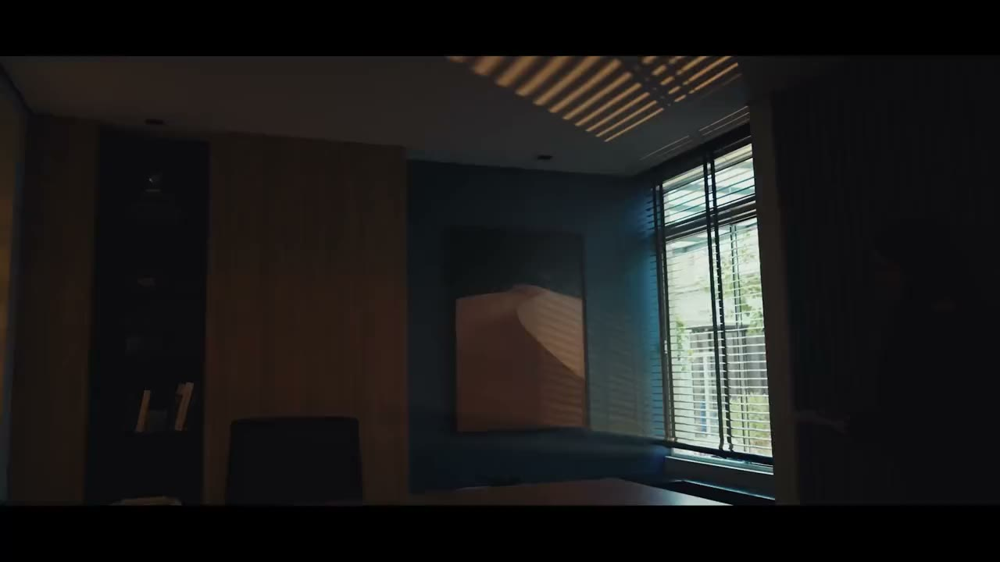

Confiança em cada decisão
Há 40 anos, a Consistem desenvolve tecnologia para empresas que precisam integrar processos, manter a operação segura e tomar decisões com mais clareza.
O que sustenta uma relação por 40 anos
O tempo amplia repertório, mas são as escolhas feitas ao longo dele que constroem uma relação de confiança.
Nosso manifesto parte dessa ideia para falar sobre decisões, presença, responsabilidade e sobre as pessoas e empresas que mantêm a indústria em movimento.
Leia o manifesto
A Consistem evolui junto da indústria
Uma história marcada pela confiança, pela solidez operacional e pela capacidade de acompanhar mudanças sem perder sua essência.
Explore a história
Experiência que gera eficiência
Chegar aos 40 anos representa acumular conhecimento sobre processos, tecnologia e, principalmente, sobre o impacto que um sistema de gestão tem na rotina de uma empresa.
Conhecimento da operação
Conviver com diferentes realidades industriais ampliou nossa capacidade de compreender processos complexos e transformar necessidades de gestão em soluções aplicáveis.
Continuidade
Para uma indústria, evolução tecnológica precisa considerar o que já funciona. Segurança, estabilidade e previsibilidade fazem parte das decisões sobre produto desde o desenvolvimento até a atualização.
Relacionamento
Os processos mudam, as empresas crescem e novos desafios aparecem. A proximidade permite acompanhar essas mudanças e manter o produto conectado à realidade de quem utiliza o sistema.
Evolução responsável
A tecnologia avança continuamente. Nosso critério é incorporá-la quando existe aplicação real para melhorar produtividade, análise, controle e capacidade de decisão.
Essa experiência aparece hoje em nossos indicadores e na forma como desenvolvemos produtos, acompanhamos clientes e avaliamos cada nova tecnologia antes de incorporá-la à operação.
De olho no futuro
Os 40 anos coincidem com movimentos importantes na forma como a Consistem se apresenta e desenvolve tecnologia.

Uma identidade mais precisa
Em 2026, renovamos nossa identidade para expressar com mais clareza a Consistem de hoje: uma empresa que combina experiência, conhecimento técnico, proximidade e capacidade de evoluir com responsabilidade.
A confiança permanece no centro dessa construção e agora ganha uma expressão mais contemporânea em nossos canais, produtos e experiências.
Conheça a nova marca
Inteligência aplicada à gestão
A Consistem Clara IA passa a representar nossa suíte de inteligência artificial, conectando assistência, agentes, criação e orquestração à realidade da gestão empresarial.
A proposta é aproximar a IA dos dados e processos da empresa e permitir que ela ajude a transformar informação em decisão e decisão em ação, com permissões, rastreabilidade e supervisão humana.
Descubra a Clara IAEvolua sua operação com confiança
Conheça as soluções Consistem e descubra como unir robustez operacional, integração de processos e evolução contínua para impulsionar sua indústria com segurança.
Fale com a gente